Lesson 5: Planning for Open Science: From Theory to Practice
Navigation
- Planning for Open Science
- Designing for Openness
- Case Study: The Outcomes of an Open Plan
- Steps to Continue Your Open Science Journey
- Lesson 5: Summary
- Lesson 5: Knowledge Check
- The Ethos of the Open Science Summary
Overview
This module is nearly over, but there's so much more information available about open science – so our last lesson is for everyone who wants to learn more. In this lesson, you review ways to start your journey with open science including a list of resources that you can use now.
Learning Objectives
After completing this lesson, you should be able to:
- List considerations to include in a planning for open science and define an open science and data management plan (OSDMP).
- Describe the different parts of the scientific workflow and how open science can be integrated into it.
- Differentiate real world examples of how a team can use open science.
- List four steps that anyone can take to be more open.
Planning for Open Science
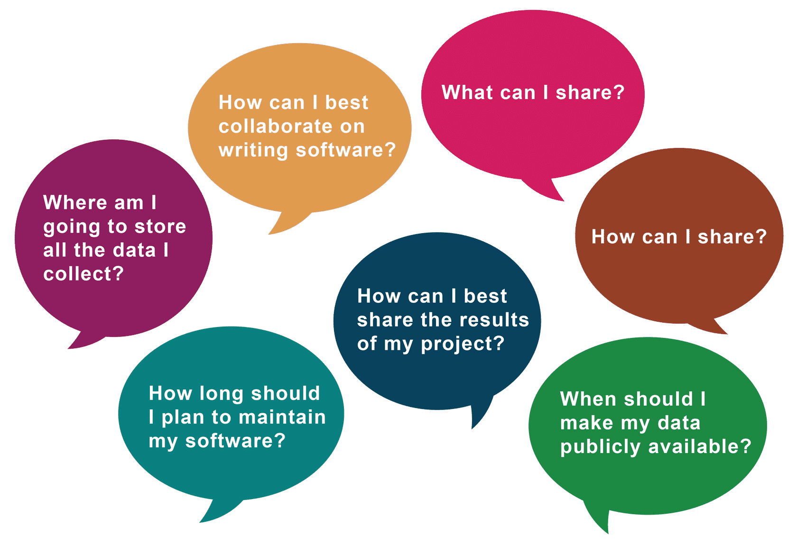
It is important to think about, discuss, and plan for desired outcomes and processes when you begin your research. Learn about where the best repositories are for your materials; discuss credit and authorship for each separate open science output, and start using open science tools to organize your work. Reach out to repositories in your discipline and institution (usually library) for help. Including this information in your plans will make you more likely to receive funding.
Planning for outputs in advance includes:
- Speaking about it and organizing with your research team
- Deciding which tools to use
- Thinking about authorship and credit
- Engaging with relevant stakeholders and research partners, for example, industry, around open science
- Identifying repositories for software and data
- Identifying journals (or other outlets) for publications
- Highlighting these approaches in your grant and much more
In reality, there is an exploratory stage where sharing one’s product may not be part of the plan. During active research and data exploration, data, code, and ideas may be created and deleted even daily. It may not be efficient to spend time making these fully open (eg. creating DOIs, documentation) because you are just exploring! Still, one may choose to make their code public through this process (it should be in some version control repository anyway, no harm in making it public). Part of this planning is beginning to think about what would be valuable to science and figuring out how you might share it.
It is important to discuss open science with your research team, lab, group or partners regularly. Much of responsible open science may seem to be related to outputs – such as data, software, and publications – but preparing and organizing work for these in advance is critical. It is much more difficult to follow leading practices for these at the end of research, in the 'afterthought' mode. Open science is both a mindset and culture that starts when you begin a project.
Open Science and Data Management Plans
Federal agencies and funders consider data management crucial for open science because it ensures that research data is well- organized, accessible, and preserved. In recent years, many have included a requirement as part of proposals or projects plans for an Open Science and Data Management Plan (OSDMP). The OSDMP includes a description of the resources to be used, the products that will be created, how they will be shared, and who will be responsible. These plans can include the data, software, publications, and project governance.
Open science and data management plans are essential because they enhance the credibility and reproducibility of research by ensuring that data is well-documented, organized, and preserved over time. Effective OSDMPs can have the following benefits:
| Transparency | Not only builds trust in scientific findings but also allows other researchers to validate and build upon them, fostering a culture of openness and cooperation. |
| Effective | Data management can lead to more efficient and cost-effective research processes. By reducing the time spent searching for and organizing data, researchers can dedicate more time to analysis and interpretation, potentially accelerating the pace of discovery and innovation. |
| Reproducibility | A key tenet of the scientific method is reproducibility and a well developed OSDMP helps ensure that others are able to validate your results. |
| Preservation | The research produced by federal funding represents a significant investment and it is important that research is saved for future generations to access and understand. |
| Inclusive | OSDMPs can include research tools and processes that can significantly improve research outcomes through collaboration and consultation. |
Learn more about OSDMPs in Module 2.
An Open Strategy
In today's world, many foundations and agencies that award research grants increasingly expect proposals to include an open science strategy. By including an open science strategy document in your scientific plan, you ensure accessibility and openness in each step of your workflow. Conclude your comprehensive plan with clearly defined steps to make research outputs easily accessible and openly available. The steps identified in your strategy should be integrated into your everyday scientific processes and practices.
Requirements
Every major research foundation and federal government agency now requires scientists to file a data management plan (DMP) along with their proposed scientific research plan. Some ask for additional details on software/code and publications.
Include Entire Data Workflow Details in the Plan
Describe your management workflow for data and related research. Other elements, such as code or a publication, have their own lifecycle and workflow which needs to be in the plan.
Include Open Terminology and Concepts
Plans that are successful typically include clear terminology about how information is made findable, accessible, interoperable, and reusable. This can include licenses, repositories, formats, and governance of the project.
Preservation
Research materials are valuable and reusable long after the project's financial support ends. Reuse can extend beyond our own lifetimes. Therefore, researchers must arrange steps for preservation and accessibility to ensure work is not lost after a research interaction ends.
Designing for Openness
Open Science Applies to the Entire Workflow
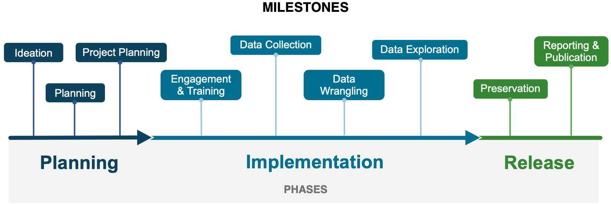
Open Science Workflow Phases Source: Opensciency
Regardless of your science discipline or the methodology that you use, the workflow remains relatively the same. It has a planning phase, an implementation phase and a release phase. Within these phases, there are milestones that vary depending on the workflow you follow. For the purpose of our discussion in this lesson, and the other modules in the curriculum, we have adopted the scientific workflow with general milestones described in the Opensciency curriculum. The details in your workflow may vary, but the overall concepts are the same. What is relevant here is that when adopting open science, it permeates all phases of the workflow. You prepare for it in the planning phase but then continue to integrate the principles of it throughout the implementation and release phases.
Products created throughout the scientific process are needed to enable others to reproduce the findings. Researchers who wish to make their results reproducible must make key elements of their study openly available for others to test.
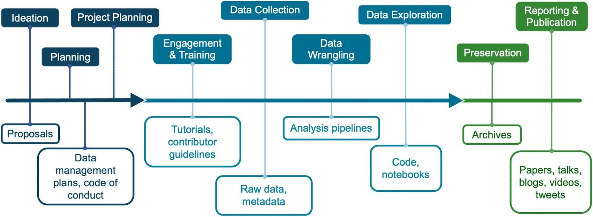
Open Science Workflow Products Source: Opensciency
Continuing through the workflow, this updated diagram now shows the types of scientific products that are created at each milestone. The specialized products that you create may vary or be completely different, but the focus on discovery for the public remains the same. Any type of products you create can be modified to support the principles and concepts of open science. Where and how to integrate open science concepts into your products is the purpose of this Open Science 101 curriculum.
Use, Make, Share
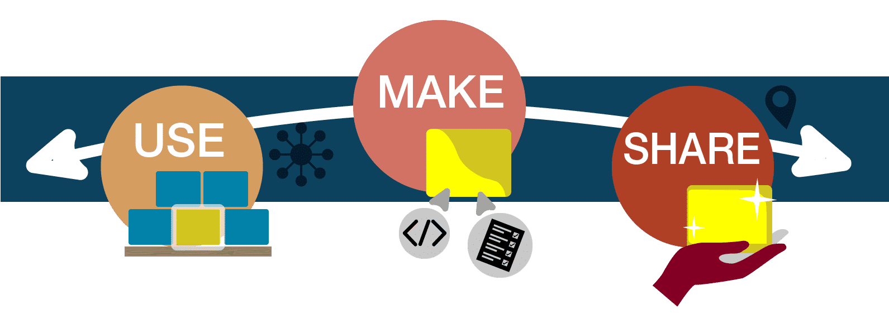
The idea that open science can impact your entire scientific workflow may seem overwhelming and unachievable, but remember, open science occurs across a spectrum – even small steps towards openness lead to more accessible, inclusive, and reproducible science. And the Open Science 101 curriculum is here to help lead through this process.
In this section, we introduce the "Use, Make, Share" framework that can start to gradually increase your adoption of open science depending on the nature and scope of your project. Throughout the course, we will explore how this framework can be used to make your science more open!
What Resources Will You Use?
There are already many open science resources for you to use! Open science already has a long history. For example, the act that created NASA mandated sharing of its discoveries with all of humanity and NASA has been sharing its data openly on the internet since the 1980’s. Now, there are already over 100 Petabytes of openly available NASA data for you to search, download, and use and examples of these services are provided in Module 3. Technology and practices have been developed around code that make it easy to collaborate on building complex solutions, and examples are given in Module 4. A range of services make it easy to share and discover open access publications and these are discussed in Module 5.
In Module 2, we will introduce you to some of the tools that not only make open science possible, but also easy.
What Outputs Will You Make?
Throughout the research process, there will be different products and results produced. These can range from data sets, samples, code, reports, manuscripts, conference proceedings, blog posts, and videos. Each of these have different considerations about how to make them including how they can be made in open and collaborative ways.
There are also different ways to run a scientific project. Is your project going to be open from inception or open at publication? There are valid reasons for both approaches, but generally the earlier you are open with data, code, and results, the more opportunities there are to grow collaboration networks and build with others (which is quite fun). Often researchers choose to be open within their project teams during development, exchanging data, code, and results, but then only sharing with the world once they feel they have a result they can trust. While this approach has been the cultural ‘norm’ within many communities, this is changing as groups grow more comfortable with openness earlier in projects and experience valuable contributions from others and build new collaboration networks.
Modules 3, 4, and 5 will discuss how to make your data, code, and results open.
How Will You Share?
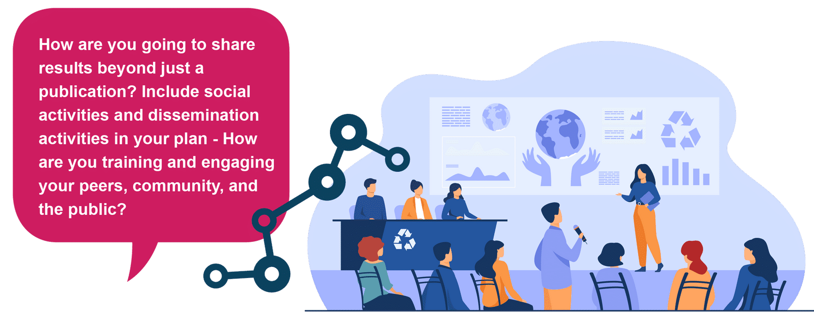
Image Credit: Freepik.com
Where you choose to share your research materials and results will have a large influence on its impact – how easy it is for others to find it, how long it is available, and how easy it is to reuse.
Will you share data in a file filled with columns of unlabelled numbers without any units or explanations or will it be in an open, standard format and following the Findable, Accessible, Interoperable, Reusable (FAIR) principles? Module 3 has more details to help you better understand how to share your data and explains ideas like FAIR and best practices in sharing data. This includes different considerations for where to share your data as well so that it is both accessible and preserved.
For software, since it is often updated and changed, many researchers first share it on a version control platform like GitHub or GitLab but then archive a version of it in a repository that has long-term preservation capabilities – more on this in Module 4!
For results, open access publications and preprint servers are common locations to share. Module 5 discusses all these options.
Activity 5.1: Use, Make, Share

Take a moment, to answer the following questions on your current research or on research that you would like to do:
- What data, software, or publications do you currently use or would like to use? Are they open or closed?
- What are the tools and processes that you currently use? Is it easy to include others in collaboration?
- How is your work shared or planned to be shared? Can anyone access your results?
Case Study: The Outcomes of an Open Plan
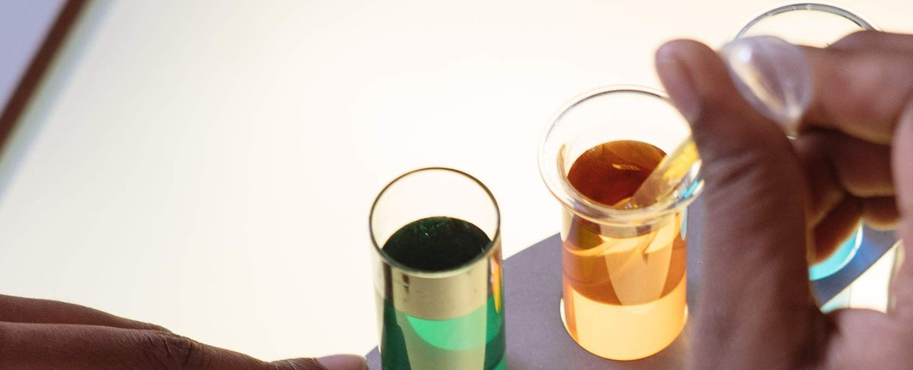
"NASA's open science guiding principles are centered in our Early Release Science work, supporting an inclusive, transparent, and collaborative scientific process."
Co-author Dr. Natasha Batalha
One of the first discoveries from the James Webb Space Telescope was the first detection of Carbon Dioxide in the atmosphere of a planet orbiting another star. This discovery was enabled through the open science principles adopted both by the project and the team.
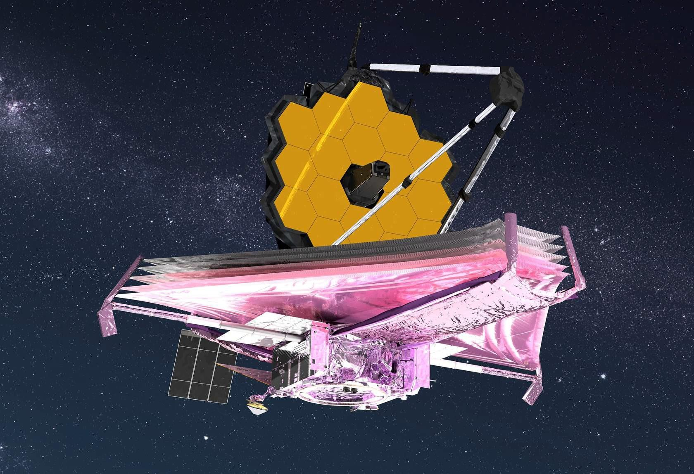
Image Credit: @AdobeStock 2023, dimazel
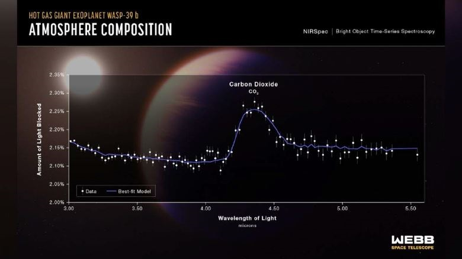
Figure Credit: NASA, ESA, CSA, Joseph Olmsted (STScI)
This was conducted as part of the JWST’s Early Release Science (ERS) Program as part of the JWST ERS Exoplanet Transiting Community program (ERS-TRANSIT). This is some of the earliest science data taken with the facility that was made openly available. The team, though, began their work years before the observations and included open science into every step of the process. The team worked in an open format from ideation, to analysis, through to publication and communication.
Let's walk through and see what open results were in fact produced. While doing so, let’s take a look at what the advantages of doing so at each stage were.
Planning for Open Science
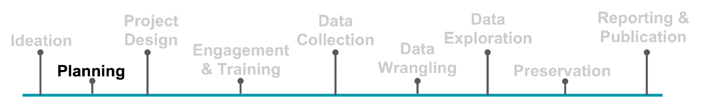
| Opportunity | Create a Governance Plan: An open code of conduct and publication policy highlights the rules of engagement of the final result. |
| Benefit | Onboarding of new members and facilitated collaboration. |
| Result | Code of Conduct and Publication Policy. |
| Availability |
On team webpage and GitHub. 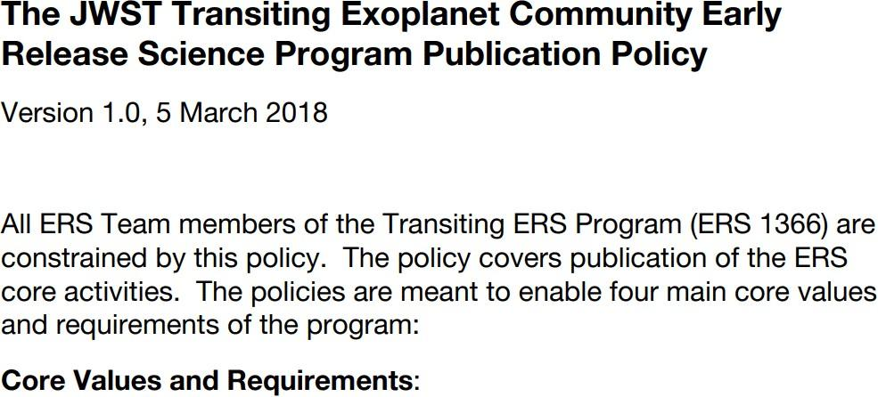 |
One of the most important parts of starting a project is thinking about who is going to be working on it and how they will work together. Before samples are collected, before data is downloaded, before code is written – how will you all work together, what are the roles and responsibilities, and how and when will you share any materials. That was a key part that this JWST project got right.
The initial team, during the planning phase, developed and openly published information in the form of the code of conduct and the publication policy.
Basically, you are welcome to work with us, but here are our rules. And then the lead scientists regularly talked about this with the team, especially as it expanded so everyone knew what was expected of them and what they got in return (credit!).
The outcome and benefit of publishing this information was the addition of new members to the team, and an agreed to and established collaborative and inclusive culture among the team.
The team grew to almost 400 people, all working together, all knowing what to expect and this created trust.
Read more about collaboration documents and credit on OpenSciency.
Open-Source Software**
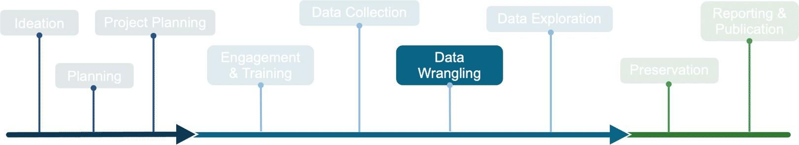
| Opportunity | Collaboration on an open software data-processing pipeline |
| Benefit | Decreased duplicative efforts, contributors get credit for their work, and accelerated the data wrangling process |
| Result | Data processing pipeline |
| Availability |
Code on GitHub, released on Zenodo, documents released in Journal of Open Source Software (an open access journal) 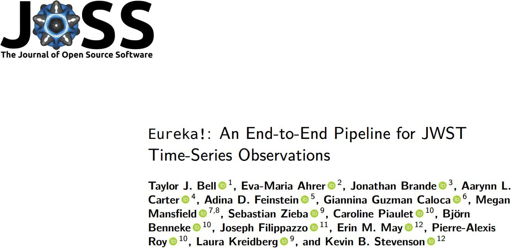 |
Like most data, JWST is complicated and it needs processing and data pipelines. The precision needed to achieve this type of detection requires detailed analysis of the observations and a wide range of expertise.
During the implementation phase, the team collaborated on creating the data processing software together, so that everyone would benefit. Imagine the wasted effort if all 400 people had written the software themselves. The benefit and outcome was that by collaborating on this effort, the team decreased duplicative efforts, contributors got credit for their work, the software was more accurate, and this effort accelerated the data wrangling process. EUREKA!, the software created, was created openly with documentation and published with peer-review of the software package.
But they didn’t have to to start from scratch! The ERS-TRANSIT team was able to build on the work of others. The software built on the JWST pipeline software developed openly by the JWST mission team. Furthermore, they were able to build on a much larger open source software ecosystem using python and Astropy.
Open Access to Results
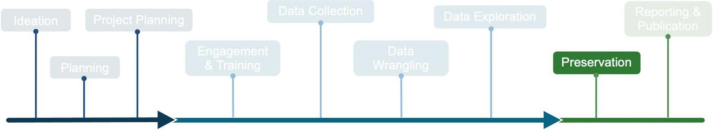
| Opportunity | Research products recorded in public archives and made openly available |
| Benefit | Allows collaborators to receive individual credit for their contributions, which provided greater incentive for participation |
| Result | Intermediate products, models, and final data |
| Availability |
All aggregated into Zenodo Community with individual contributing authors and DOIs 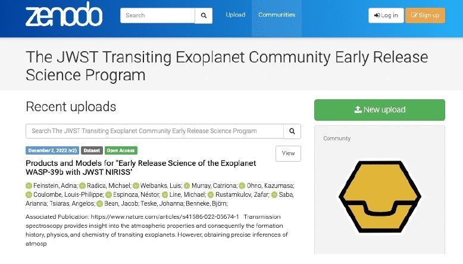 |
During the release phase, the team labeled research products adequately for reuse and reproducibility and published in public forums/repositories. The outcome and benefits included collaborators receiving credit for data, software, and other digital research products that benefit the scientific community. Data and software were archived openly on the general data repository Zenodo and the publication was made available as a preprint and an open access publication.
Making your results open also opens you up to clearer ways of receiving credit and can also reduce the risk of scooping (each result can be individually referenced as soon as it is made available). Applying reproducibility practices separately on different parts of the project such as preparation documents, datasets, software, and reporting allows other researchers to test and reuse your work in their research, and your research will be cited more often, thus bringing fair recognition for your work. Collaborators can get more motivated to contribute because they can easily get recognition in terms of authorship for their contributions made for each one of the research outputs generated.
Read more about making results open throughout the research process on OpenSciency.
Steps to Continue Your Open Science Journey
Here we will explore the next steps to open science that everybody can take. The thought that open science can impact your entire scientific workflow may seem overwhelming and unachievable, but this is not the case. You can start slowly and gradually increase your adoption depending on the nature and scope of your project. Here are a few immediate ways that you can start engaging in open science.
Where to Go From Here
- Get involved: Become part of an open science community in your sector.
- Start using/sharing the open science tools of your community.
- Learn how to use/archive data in repositories and community tools and resources.
- Concise statement of the Ethos of Open Science: Find, collaborate, and share!
Identify Your Open Science Communities
Here are the steps you can take to find your own science community:
- Talk with your colleagues.
- Read your field’s literature.
- Run searches, in general and discipline-specific areas.
- Investigate online communities encouraging open science, such as:
- The EU's 'Foster Open Science' program
- The Turing Way online manual
- FORRT
Join open science communities. There are generic ones as listed here or you can seek out communities that are not only within your domain but also within your geographical area.
- TOPS GitHub discussion board
- Opensciency online open science community list
Explore Open Repositories
There are many repositories that host open data, software, and results. We share many of these resources in the later modules, but here are two NASA repositories that allow you to search for existing data collections that might be relevant to your interests.
Four Steps to Open Science that Anyone Can Take
- Keep seeking best practices for open science, and develop plans to be more open in your science or research.
- Think about all the different types of reviews you are involved with, and how to improve them with a goal of openness.
- Ask colleagues about open science activities, and award credit for them in evaluations.
- Engage with underrepresented communities to ensure science encourages a more equitable, impactful, and positive future.
Continue Taking TOPS Open Science 101
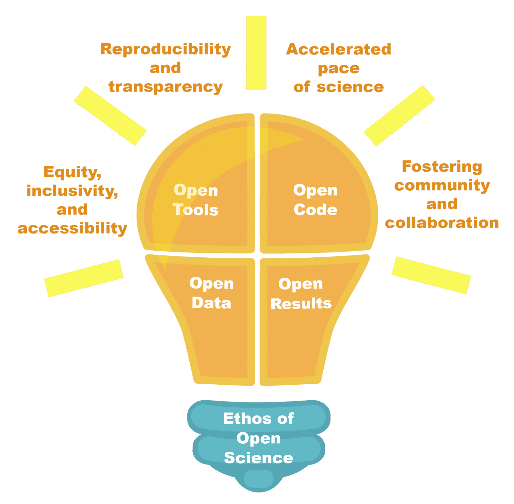
The TOPS Open Science 101 curriculum is a good place to go for a more in-depth introduction to the various elements of Open Science – each of the next 4 modules provides details and practical exercises to help participants develop a better understanding of that specific topic.
But, if you want to also do an in-person or virtual workshop, we got you!
| Self-Paced Online Course | Online Workshops | In-person Workshops |
Images Credit: freepik.com
NASA TOPS is coordinating online and in-person open science workshops!
These events provide an opportunity for you to take Open Science 101 with others and engage with members of the open science community! To learn more go here!
Additional Resources
In addition to the resources listed elsewhere in this training, the below community resources are excellent sources of information about Open Software.
References and Guides
- OpenSciency
- NASA SMD's Open-Source Science Guidance for researchers
- Turing Way handbook to reproducible, ethical and collaborative data science
Lesson 5: Summary
There is no one way of doing open science, and any steps you take to make your science more open are extremely valuable, especially as we transition to a more open scientific ecosystem in the future. We want people to be able to identify the most important things they "can" openly share, but with the ultimate goal of complete openness.
What Have We Covered in this Module?
- Preparing and organizing in advance are crucial components for ensuring the effectiveness of open science work.
- Open Science and Data Management Plans (OSDMP) provide a plan for how open science is integrated into a project including the sharing of data, software, and results.
- Designing for openness is a critical aspect of making sure that open science is integrated into the entire scientific workflow from start to finish. This includes resources that can be used, products that will be made, and how the science will be shared.
- Open Science is already happening - there are already teams conducting their research openly and many resources that can be used to make your research more open.
- There are more opportunities to participate and learn about Open Science – this is just the start!
Lesson 5: Knowledge Check
Answer the following questions to test what you have learned so far.
Question
01/04
Applying reproducibility practices separately on different parts of the project allows other researchers to do what?
Select all that apply.
- Expand research focus
- Consider opportunities for more collaborative advantage
- Test and reuse your work in their research
- Cite your research more often to bring fair recognition to your work
- Understand new discoveries
Question
02/04
Read the statement and decide whether it's true or false.
The Open Science and Data Management Plan (OSDMP) describes how the scientific information that will be produced from scientific activities will be managed and made openly available.
- True
- False
Question
03/04
Read the statement and decide whether it's true or false.
Before starting a project, it is important for researchers to consider how they will collaborate with other researchers, what are the roles and responsibilities, and how and when they will share any materials.
- True
- False
Question
04/04
Which item is NOT one of the four steps to open science that anyone can take?
Select all that apply.
- Engage with underrepresented communities to ensure science encourages a more equitable, impactful, and positive future.
- Ask colleagues about open science activities, and award credit for them in evaluations.
- Think about all the different types of reviews you are involved with, and how to improve them with a goal of openness.
- Create a new journal that requires an expensive subscription to read.
- Keep seeking best practices for open science, and develop plans to be more open in your science or research.
The Ethos of the Open Science Summary
Congratulations! Now you should be able to:
- Explain what open science is, why it's a good thing to do, and list some of the benefits and challenges of open science adoption.
- Describe the practice of open science, including considerations when writing a management plan and the tasks in the "Use, Make, Share" framework.
- Evaluate available options when determining whether research products should or should not be open.
- List ways to connect with others who are part of the open science community.
Further Resources
Masuzzo and Martens (2017). Do you speak Open Science? Resources and tips to learn the language
Guiding Principles for Findable, Accessible, Interoperable and Re-usable Data. Publishing version B1.0, Force 11
Fecher and Friesike (2014). Open Science: One Term, Five Schools of Thought
EC Working Group on Education and Skills under Open Science (2017). Providing researchers with the skills and competencies they need to practise Open Science
"What is Open Science"
Resources for Earth Science